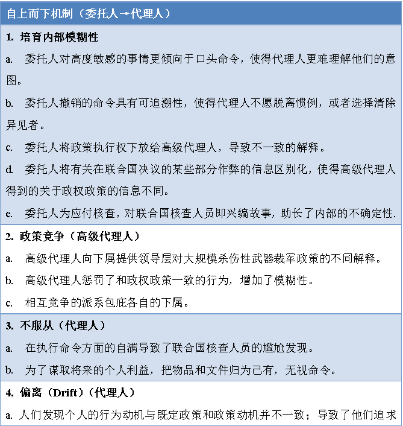
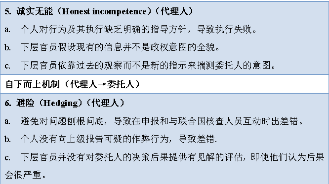

收录于合集

作品简介
【作者】 Målfrid Braut-Hegghammer，奥斯陆大学政治学教授。
【编译】 张曼娜（国政学人编译员，吉林大学公共外交学院外交学系）
【校对】 吴天麟
【审核】 房宇馨
【排版】 郭铭心怡
【美编 】游钜家
【来源】 Braut-Hegghammer,
Målfrid. (2020). Cheater’s Dilemma: Iraq, Weapons of Mass Destruction, and the Path to War. International Security. 45. 51-89. 10.1162/isec_a_00382.
.
期刊简介
《国际安全》（International Security）于1976年创立，是国际和国家安全领域的顶级同行评议学术期刊，以季刊形式发行。该期刊由哈佛大学贝尔弗科学与国际事务中心（Belfer Center for Science and International Affairs at Harvard University）编辑，麻省理工学院出版社（MIT Press）组织出版。根据2019 Journal Citation Reports，其影响因子为5.432，位列“国际关系”类别期刊第一位。
作弊者困境：伊拉克、大规模杀伤性武器，与通向战争之路
Cheater’s Dilemma：Iraq, Weapons of Mass Destruction, and the Path to War
Målfrid Braut-Hegghammer
编者按
本文运用了详尽的史实与一手资料对1991年至2003年间伊拉克政府针对大规模杀伤性武器裁军问题及与联合国核查人员合作的决策过程进行分析。主要探究的问题是： 为什么伊拉克没有努力使联合国核查人员相信其不再拥有大规模杀伤性武器？ 作者的假设是：（1）伊拉克面临着“作弊者困境”：作弊者坦白会让人怀疑其行为可信度（是否说的是真话，是否有所保留），并且不确定会受到惩罚还是奖励；作弊者继续撒谎会面临真相被他人揭开的风险，（2）伊拉克政权内部存在委托代理问题，使得政策的制定与执行存在偏差。
文章导读
伊拉克在海湾战争后并未成功使联合国核查人员确信其已经销毁所有大规模杀伤性武器（Weapons of Mass Destruction，WMD）的事实，最终导致了联合国的制裁与2003年美国推翻伊拉克政权。对于为什么伊拉克没有努力证明其不再拥有大规模杀伤性武器，学者们的答案指向了功能失调与模糊的战略威慑政策。然而最新的资料显示，伊拉克的政策行为变化分为三个阶段：从完全隐瞒到遮遮掩掩再到主动合作。
本文指出了1991至2003年间伊拉克领导层面临的核心困境，并探讨了其对于伊拉克大规模杀伤性武器相关决策与实施过程的影响。作者认为，伊拉克领导层始终在努力解决其“作弊者困境”—— 在每一次披露都会削弱未来解除制裁的可能性的情况下，它应该披露多少关于其过去大规模杀伤性武器能力和曾被掩盖的信息？ 这种模棱两可反映了伊拉克领导层在风险与收益间的艰难权衡，且并没有起到预想中的威慑作用，反而导致了政策执行过程中的一系列委托代理（principal- agent）问题。本文对这一系列问题进行了阐述，并将论述分为三个部分。
01
目前的解释与新的观点
在这一部分中，作者检验了目前关于伊拉克行为及其原因的四种解释，分别为 “威慑虚势论”（Deterrence Bluff）、“信息难题论”（ Information Problems）、“政权安全论”（Regime Security）与“骗局论”（Deception） （见表1），并利用新的资料概述了委托代理理论如何帮助描述和解释该政权政策执行的不一致。
表1：目前对于伊拉克与联合国核查工作合作情况的解释总结
在本文中，作者提出了一种新的解释方法：伊拉克领导层面临着委托代理问题。 领导人(委托人)依靠国家机器内部的代理人将他们的政策转化为与领导层偏好一致的行动。然而，委托人和代理人可能有不同的利益、而且对他人的偏好的了解有限；此外，领导层往往无法时刻监督代理人按照其偏好行事。 信息问题在专制政权中普遍存在，在个人主义政权中可能尤其严重。 权力的集中要求个人主义领导人采取所谓“维稳行动”（robust action），如发布混杂的信息、鼓励相互竞争的政策路线，以避免领导个人与导致失败的错误或政策相联系。 个人主义领导人也不愿意大力推行新政策，除非对其自身生存十分必要；其代理人的习惯性预期也会阻断突然的政策变化。
表 2：政策执行与反馈机制
 
02
1991—2003，裁军政策与执行的三个阶段
这一部分作者分析了伊拉克大规模杀伤性武器裁军政策及其执行的三个阶段：（1）否认和掩盖（1991年4月—7月），（2）让步和隐瞒的混合战略（1991年7月—1995年8月），（3）加强合作（1995年8月—1998年12月、2002年11月—2003年3月）。
（一）1991年4月—7月：否认与欺骗
1991年联合国安理会第687号决议发布后，伊拉克领导层面临着一个两难问题：应该透露多少大规模杀伤性武器的能力？萨达姆的女婿、伊拉克军事工业公司（Military Industrial Corporation，MIC）负责人侯赛因·卡迈勒（Hussein Kamil）最终的决策是： 只发布联合国与国际原子能机构已知的情况，否认其他一切内容。 这一决策的后果是，有关文件、样本与设备遭到仓促销毁，伊拉克官员对过往相关情况只能进行牵强解释。
在1991年6月23日至6月28日的核查工作中，联合国核查员发现了伊拉克正在为一项未公布的铀浓缩计划藏匿设备。为了解决这一危机，安理会向巴格达派出了一个高级别代表团，而伊拉克方面的反应是秘密销毁未经发布的生化武器和导弹以掩盖事实。经过一系列的销毁与隐藏行动，1991年7月初，伊拉克告知高级代表团已经决定不保留任何违反第687号决议的设备，一部分设备已经也交给军方，将用于伊拉克的重建工作，然而具体的标准与行动仍旧含糊不清。直到1992年3月，在核查人员再次发现其言行不一，伊拉克才承认单方面销毁了导弹与化学武器，但没有销毁核武弹头。这一单方面的销毁行为无论是给联合国核查工作、伊拉克的国际信誉还是其政权内部的信息沟通，都带来了一系列问题。
（二）1991年7月—1995年8月：混合战略
第一阶段的核查工作出现问题后，伊拉克领导层采用了一种投机主义的做法： 一方面对核查工作采取更加合作的态度，另一方面继续隐瞒其大规模杀伤性武器的信息。 然而信息问题仍旧存在：领导层无法确定伊拉克是否能保持其大规模杀伤性武器能力，以及以后是否要重建；政府官员与科研人员无法得到关于现存大规模杀伤性武器技术能力水平的信息。
其次，伊拉克政权内部对这一新的混合战略的实施看法也存在分歧：阿齐兹集团倾向于加强与核查人员的合作以增加解除制裁的机会；卡迈勒则支持在寻求解除制裁的同时保留重建大规模杀伤性武器计划。双方所领导的委员会在这一阶段的行动中各行其是，两个委员会之间的政策竞争给低级官员带来的政治压力与联合国核查人员给隐藏行动带来的外部压力，加之伊拉克领导层对于敏感信息和决策口头沟通的偏好，给政策的执行带来了诸多困难。在意识到这些问题后，伊拉克领导层加强了内部监测，并在核查前整理好场地与文件，然而外部人士认为这些行为表明了伊拉克人的不诚实。
（1）1991年8月—1991年12月：“终究是错付了。”（“I have given them everything.”）
伊拉克如何看待现阶段进一步让步的风险和收益？在12月中旬的一次会议上，在听取高级官员的分析报告后，萨达姆认为制裁和核查制度并不会长久，并指示其手下不应向联合国核查人员交出装备，以在国内和整个中东地区表明决心。然而大约一周后，顾问杜里（Izzat al-Duri）与阿齐兹都针对制裁继续发展对政府的影响向萨达姆发出了警告。
在接下来的三到四年里，情况急转直下。联合国核查人员发现了伊拉克正在秘密进行的导弹、化学、核武器及生物武器等计划。证据确凿，伊拉克人不情愿地承认了某些能力和过去的活动，同时寻求国际社会的支持，以解除或削弱制裁。到1995年初，伊拉克仍在隐瞒入侵科威特后实施的核武器紧急研发计划、化学武器的使用、对神经毒剂的研究以及生物武器的生产等信息。高级官员对核查工作的介入也使核查人员产生了怀疑。
（2）1995年2月—1995年8月：困境、最后通牒与叛逃
1995年初，联合国核查人员进一步发现了伊拉克进攻性生物武器计划的有关证据，但伊拉克政府仍予以否认。萨达姆在2月5日会见他的高级顾问时强调了一个根本问题： 如果伊拉克再次承认隐瞒了过去项目的信息，核查人员可能会质疑伊拉克在所有领域的遵守情况。 此即作弊者困境的本质： 承认更多的隐瞒降低了伊拉克获得回报的可能性，而不承认有被发现另一个欺骗行为的风险。 另外，承认隐瞒也意味着伊拉克承认了对盟国法国与俄罗斯的欺骗，这将导致安理会对伊拉克的一致反对。
对此，阿齐兹的看法仍旧是：既然伊拉克已经参与了与联合国核查人员的合作，并且付出了沉重代价，就要继续遵守游戏规则，不枉费这些代价。萨达姆和阿齐兹的谈话遵循了伊拉克领导层的传统：含糊的建议、内部禁忌，以及一个近乎沉默的领导人。然而在后来公开谈论生物武器计划的高级官员会议上，卡迈勒强调应当继续掩盖一切。在这次会议上，杜里提出应当给联合国安理会设置一个最后期限，如果在这个期限之前安理会在积极处理伊拉克问题上没有发生任何重大变化，伊拉克将会放弃对安理会的承诺。
在接下来的几个月里，伊拉克便采取了这一对抗性政策。对于联合国发现的各种证明生物武器生产的设备与材料，伊拉克领导层继续坚持其荒谬的解释，内部仍然不断为是否承认其隐瞒行为明争暗斗。萨达姆及其高级官员仍然在不断为解除制裁争取国际支持，同时不断以最后期限向安理会以及联合国原子能机构施压。7月中旬，阿齐兹向核查委员会主席埃克乌斯发出了解除制裁的最后通牒，然而8月8日，伊拉克军事工业公司负责人、隐藏活动的“总设计师”卡迈勒叛逃至约旦，让前景又变得扑朔迷离。
（三）加强合作
（1）1995—1998：作弊者困境
卡迈勒的叛逃给伊拉克领导层带来了新的困境——如何防止他泄露隐藏行动的秘密。领导层甚至不完全了解卡迈勒策划的骗局，因此不能准确预测他会透露什么，卡迈勒与萨达姆的私人关系也使得对其曾经的活动的调查高度敏感。这种不确定性又为政策执行的 偏离 （代理人尽量不主动提供与卡迈勒的活动有关的信息或者调查安全机构等有权势者的活动）、 不服从 （代理人想要利用这种不确定性，隐藏敏感文件，尽管他们被明确命令将这些文件交给核查人员）以及 避险 （代理人认为自己没有掌握全部情况，又尽量避免刨根问底，于是依靠以往的观察而非最新指示来执行政策）创造了条件。
对此，阿齐兹提议在卡迈勒泄密之前，先将相关文件交给核查人员。讽刺的是，伊拉克政府对核查人员披露的信息远比卡迈勒后来揭露的要多，副总统拉马丹甚至承认了伊拉克曾经将两种生物毒剂武器化的事实。在向埃克乌斯出示新的大规模杀伤性武器项目文件时，对于其中的诸多疑点，伊拉克官员的解释破绽百出。
虽然卡迈勒的叛逃意味着伊拉克欺骗政策的终结，但其作弊行为仍在继续。阿齐兹与萨达姆决定继续掩耳盗铃，得过且过。但萨达姆拒绝就这一决定与其他高层进行商量，这种讳莫如深必然导致政权高层内部的模糊性以及下层官员在政策执行时的避险行为。
果然，在政策实施过程中，伊拉克人产生了公开的意见分歧，处于执行环节的官员甚至抵制领导层为增强合作与透明度所作的努力，领导层对直接与联合国核查人员接触的官员与科研人员进行监控，然而对于他们应当如何与联合国核查人员合作却指示不明。安全人员被认为是麻烦的来源，于是为了自保，安全人员往往对可疑情况选择缄默。阿齐兹在90年代后期转向了更具对抗性的态度，被认为过于迁就核查人员的官员被降职，而见风使舵的人则步步高升。在上级捉摸不定的政策变化中，科研人员也开始为了个人利益而对信息有所保留，显然上级的监督并没有起作用。伊拉克的代理人们甚至因为开始对领导层隐瞒敏感信息而陷入同样的作弊者困境。整个伊拉克与联合国在裁军问题上的合作便陷入了作弊者困境的循环。
在伊拉克几乎快要蒙混过关，核查工作接近尾声之时，国际原子能机构突然变卦，宣布仍需要伊拉克拿出更多证据证明核武器计划已经完全被“放弃”，而不仅仅是“中断”。特委会进行了一系列侵入性核查。1997年夏天，伊拉克向联合国提出抗议。
1998年，在美国准备对伊拉克发动“沙漠之狐行动”（Operation Desert Fox）之时，核查人员离开了伊拉克。这次行动后，制裁仍在继续，但联合国核查人员并没有返回。萨达姆政府通过了一项秘密决议，决定伊拉克将不再遵守联合国所有决议，然而实际行为却恰恰与之相反。萨达姆又一次模棱两可、自我矛盾，让公众摸不着头脑。
（2）2002年11月—2003年3月：重启核查
2001年秋天美国入侵阿富汗后，伊拉克官员开始担心他们的国家会是美国的下一个目标。然而伊拉克领导层对美国是否会推翻伊拉克政权持过于乐观。安理会于2002年11月8日通过了第1441号决议，给予伊拉克履行其解除大规模杀伤性武器义务的“最后机会”，伊拉克也同意在11月恢复核查。这使伊拉克再次陷入困境：如果报告没有大规模杀伤性武器，会被认为在撒谎；如果伊拉克真的存在大规模杀伤性武器并且报告了这一情况，那么就直接为美国入侵伊拉克找到了正当理由。伊拉克当时确实不存在未销毁的大规模杀伤性武器，但伊拉克官员并没有证据。伊拉克政府最终提交了一份避重就轻的声明，给国际社会留下了怀疑空间。
核查重启后，1991年到1998年的戏码再次重演，政策执行问题仍旧存在。2003年初，伊拉克终于决定加强合作，按部就班配合核查，然而为时已晚。2003年3月19日，美国领导的联军入侵伊拉克。
03
谎言的连锁效应
1991年至2003年发生在伊拉克的事情说明了一个国家所面临的困境：当继续承认错误的风险显而易见，而回报遥遥无期的时候，这个国家却只能披露有关过去大规模杀伤性武器计划的信息与为了隐藏这些信息所做的努力。在反复的互动中， 承认过去的违规与欺骗行为是否能得到承诺的回报，往往决定了各国会如何处理这一困境。 像伊拉克这样有着强大敌人（美国）的孤立国家，有充分的理由怀疑其坦白行为是否会换来承诺中的回报，而结果也说明了进一步披露只会带来批评与更坚定的制裁。另一方面，这样国家的官员也会因为担心坦白会在国内外公众造成或强化一种偏见而选择有保留地自揭其短，哪怕政策已经明确转向。
04
结论
本文认为，伊拉克没能成功证明其在2003年战争之前不再拥有大规模杀伤性武器的原因有两个：首先， 伊拉克政权在努力解决一个作弊者困境：额外披露信息的成本- 收益权衡。 伊拉克在权衡后选择的做法是“蒙混过关”，然而这种有保留的坦白只会加深其进一步欺骗的嫌疑。第二， 委托代理问题阻碍了伊拉克领导人加强合作的努力。 伊拉克政权中的委托人与代理人之间的信息残缺与偏好不对称导致了高层官员之间的政策竞争与代理人在政策执行时的避险行为与偏离，而伊拉克个人主义政权的特点更是加剧了这一影响。
委托代理问题的视角解释了伊拉克政府在处理伊拉克大规模杀伤性武器问题的决策过程中的一些细节谜团，而这些发现也为其他类似的孤立国家如何处理作弊者困境提供了线索。
译者评述
文中所提到的大部分的委托代理问题，都符合艾利森（Graham Allison）三种经典决策模式中的“组织行为模式”（Organizational Process Model）与“政府政治模式”（Governmental Politics Model）。针对组织行为模式，艾利森认为：“政府行为不是经过仔细计算而做出的选择，而是各个大型组织根据组织的标准运作程序（Standard Operating Procedures）的运作而产生的输出（output）。” [1]程序、常规、组织文化等在决策过程中起到了重要作用。文中出现多次的代理人按照惯例而非最新指示执行政策以及所谓的伊拉克领导层的“决策传统”，都受到组织行为模式的影响。政府政治模式认为，“位于组织顶层的领导人所构成的团体并非铁板一块”，“政府行为并不是组织的输出，而是讨价还价的博弈的结果。”这一点在贯穿于伊拉克政府与联合国打交道的全程之中，在阿齐兹与卡迈勒的政治斗争中也体现得淋漓尽致。
其次，杰尼斯（Irving Janis）的《小集团思维》一书中提出的“小集团思维”概念虽然是针对决策集团的分析，然而在本文所述实践中，小集团思维似乎在代理人中体现得更加明显，主要表现为代理人的避险行为以及委托人培育内部模糊性的影响。[2]
本文的创新之处在于：首先，在对伊拉克大规模杀伤性武器问题的讨论中，跳脱出了以美国为主体的传统，如对美国发动对伊拉克军事行动的合法性的探讨。分析伊拉克这样的孤立政权面对制裁时的策略，对朝核问题有一定的参考价值。其次，不同于现有的大部分解释将伊拉克政府看作一个单一整体的角度（类似艾利森教授在《决策的本质》一书中提出的“理性行为体模式”（Rational Actor Model）），作者选择解构分析伊拉克政权内部的决策过程，类似文中提到的“信息难题论”，但比这一观点更加深入。本文的问题在于由于呈现了大量的历史决策过程的细节，对假设的论证不够清晰。
参考文献
[1]格雷厄姆·艾利森等著，王伟光等译：《决策的本质：还原古巴导弹危机的真相》，北京：商务印书馆2015年版。
[2]张清敏：《“小集团思维”：外交政策分析的特殊模式》，载《国际论坛》2004年第2期，第74页。
文章观点不代表本平台观点，本平台评译分享的文章均出于专业学习之用, 不以任何盈利为目的，内容主要呈现对原文的介绍，原文内容请通过各高校购买的数据库自行下载。
**
**
**
**
**
**
添加 “国小政”微信
获取最新资讯


国政学人
支持学术公益与知识传播
微信扫一扫赞赏作者 __赞赏
已喜欢，对作者说句悄悄话
取消 __
发送给作者
发送
最多40字，当前共字
上一页 1/3 下一页
长按二维码向我转账
支持学术公益与知识传播
受苹果公司新规定影响，微信 iOS 版的赞赏功能被关闭，可通过二维码转账支持公众号。